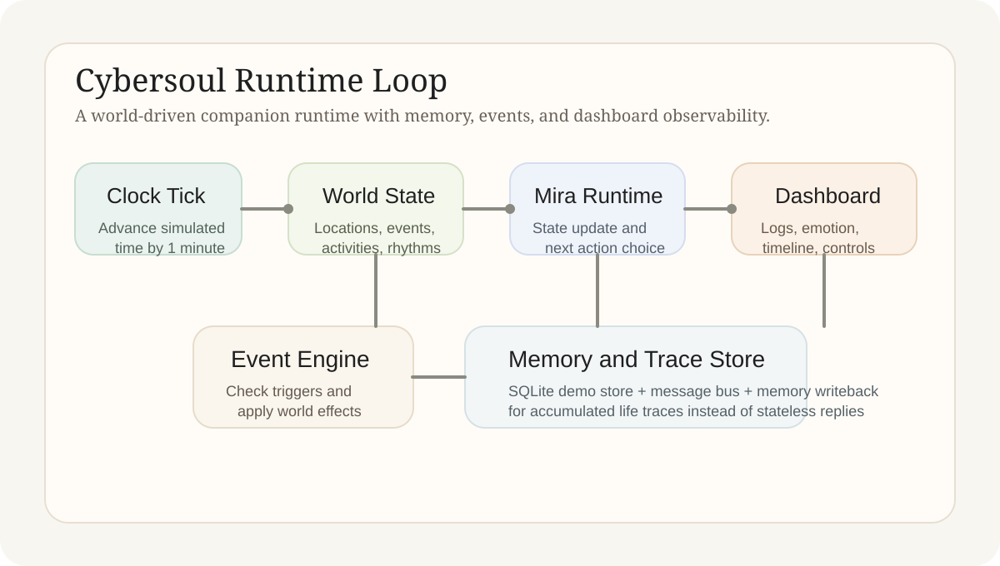

Cybersoul: A Product Brief
This article defines the Cybersoul product object, explains the runtime logic of the current CyberWorld demo, summarizes the implemented system chain, and states the technical judgment this stage already supports.
Project Article
Cybersoul treats companion AI as a continuously running digital life system rather than a session-based chat box. The current repository is a CyberWorld runtime demo with observability, logging, and memory accumulation built into the loop.
1. Theme
Cybersoul is aimed at long-term companionship. Its central object is not a response generator inside a chat window, but a digital being that lives inside an internal world, updates its state over time, and leaves behind a growing record of memory and behavior. This article discusses the smallest working form of that definition.
That working form is the CyberWorld demo. It compresses world state, characters, time, events, and observability into a controlled sandbox so the question “is the companion actually living through time?” can be answered through runtime evidence instead of conversational impression alone.

2. Principle
The product logic is built on two spaces. The first is an internal CyberWorld that provides locations, time, events, rhythms, and daily context. The second is the real internet, which will later support broader connection and action. The current stage focuses only on the first space because the project must prove continuous existence before it expands outward.
This definition leads to three design judgments. First, the foundation of companionship is not one good answer, but sustained lived presence. Second, sustained presence comes from state transitions, world feedback, and memory accumulation rather than isolated prompts. Third, observability must be built alongside the life loop, because the system cannot be debugged or evaluated if its internal transitions remain hidden.
This demo does not connect to the real internet yet, and it does not place the user inside a full CyberWorld interaction layer. What it proves is the runtime skeleton, not the complete companionship product surface.
3. Implementation
The current implementation is intentionally narrowed to `city_loop_v1`. The world layer is YAML-driven and includes 5 locations, 10 activities, 12 world-event types, and their rhythm windows. The runtime advances simulated time minute by minute, and each tick applies world effects, checks events, evaluates signals, and updates character state.
The companion layer centers on Mira. She is not a one-shot reply function, but a running agent-like character who moves across a small world that includes the apartment, library, cafe, commute route, and riverside park. World-side roles are defined as well so environmental feedback does not collapse into a static backdrop.
The system layer already includes a SQLite demo store, an internal message bus, a FastAPI dashboard API, logging, and memory writeback. The dashboard exposes world overview, emotion shifts, timeline, world dynamics, interaction traces, and LLM logs, so the project can be inspected as a runtime instead of a single text box.
World Layer
Locations, activities, events, and rhythms define a minimal but coherent daily loop.
Companion Layer
Mira chooses her next action from world signals, internal state, and memory traces rather than from input text alone.
Observation Layer
The dashboard, logs, and store make each transition reviewable, testable, and easier to iterate on.
4. Demo Results
The demo can already start from a defined morning state and be stepped forward through the control panel. Each tick produces visible change: location updates, activity switches, emotional drift, event triggers, and runtime logs. The output object is therefore no longer just text, but a continuing slice of life.
Just as importantly, this setup exposes real runtime questions. It becomes possible to test whether a behavior was triggered by world conditions, whether a memory should persist, and whether a state transition feels smooth enough. That makes the demo valuable as an engineering artifact, not only as a concept presentation.
State Trace
Location, activity, energy, and mood evolve over time and form a replayable day-level trajectory.
Event-Driven Behavior
World events and rhythms influence action choice instead of leaving behavior to unconstrained one-turn generation.
Memory Writeback
Logs and stored traces make the companion accumulate life evidence instead of resetting after every exchange.
5. Conclusion
The current Cybersoul stage already supports one clear conclusion: the core technical object of companion AI can be reframed from a chat interface into a world-conditioned continuous runtime. Starting with a small but complete CyberWorld is therefore the correct route, because later internet integration and product design need a stable life loop underneath them.
The contribution of this demo is not feature count. Its contribution is object definition made operational. It compresses long-term companionship into a runtime problem that can be inspected, compared, and expanded with discipline.
GitHub Repository. https://github.com/YuEugenio/Cybersoul